噗通！掉进童话
花醒之春
· · · ·
0
/ 1200 m
00
划出去，就现在。
A / D
左右划桨
W
奋力加速
空格
减速稳船
E / Q
反击 / 船只技能
手机可拖动河面，或使用屏幕按钮。
3 条命 · 受伤后短暂无敌
一场小小的奇游

世界太大，先划为敬。
选一条船
× 3
轻羽艇
灵巧 · 跃浪
✓
苔石艇
稳健 · 护盾
✓
月萤艇
魔法 · 反击
✓
轻巧跃浪，翻过险流。
花园准备中
试划这一季
先看风景
春
夏
秋
冬
画质
极致
精致
均衡
实机观景
全屏观景 ↗
花园准备中…
重新加载花园
实时 3D · 观景模式
返回花园 ↗
100
反击
18
E
跃浪
32
Q
蓄力
减速
加速
歇口气
河流等你。
A
0
本次得分
0
航程 m
0
光种
0
水门
0
反击
继续出发
再试一次
换条船，再出发
请开启 JavaScript，开启童话冒险。